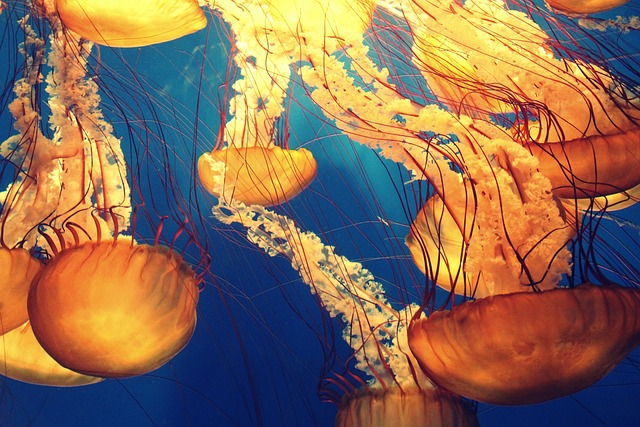

ORCA
• The orca (Orcinus orca), or killer whale, is a toothed whale that is the
largest member of the oceanic dolphin family. It is the only extant species
in the genus Orcinus.
• Orcas are recognizable by their black-and-white patterned body. A
cosmopolitan species, orcas are found in diverse marine environments,
from Arctic to Antarctic regions to tropical seas.Orcas are apex predators
with a diverse diet.
• Individual populations often specialize in particular types of prey. This
includes a variety of fish, sharks, rays, and marine mammals such as seals
and other dolphins and whales.
• Orcas are not usually a threat to humans, and no fatal attack has ever been
documented in their natural habitat. There have been cases of captive orcas
killing or injuring their handlers at marine theme parks. Orcas feature
strongly in the mythologies of indigenous cultures, and their reputation in
different cultures ranges from being the souls of humans to merciless killers.
GREEN SEA TURTLE
• The Pacific green sea turtle breeds and lays eggs in the Galapagos, but it is not endemic to the
islands. They are called “green” because of the color of their flesh.
• Pacific sea turtles are highly migratory creatures. They range from Baja California south to the
Galapagos and Peru and as far west as Hawaii and the Marshall Islands. Green sea turtles cannot
pull their heads and limbs inside their shells, which makes them more vulnerable to predators.
They come to Galapagos primarily to nest. But only females come ashore to lay eggs. Males remain
submerged in the water most of their lives.
• The green sea turtle (Chelonia mydas), also known as the green turtle, black turtle or Pacific
green turtle is a species of large sea turtle of the family Cheloniidae. It is the only species
in the genus Chelonia. Its range extends throughout tropical and subtropical seas around the world,
with two distinct populations in the Atlantic and Pacific Oceans, but it is also found in the Indian
Ocean. The common name refers to the usually green fat found beneath its carapace, not to the color
of its carapace, which is olive to black.
OCTOPUS
• The giant Pacific octopus, the largest octopus species, is usually reddish-pink with a
delicate, veinlike pattern when you see it up close, fading to white on the underside of
the arms. Its eight arms are covered with suction cups — 2,240 of them in females, about
100 fewer in males — which give the octopus an iron grip as well as exquisite senses of
taste and smell.
• Lifespan- The giant Pacific octopus has a long lifespan for an octopus — about three to
five years. Octopuses in general usually live no more than a year! A giant Pacific octopus
will live a solitary life until the very end, at which point it will seek out a mate, reproduce
and die shortly thereafter. Range-The giant Pacific octopus inhabits coastal waters in the
Northern Pacific Ocean.
• Across the continents of Asia, Australia and the Americas, more than 25,000 islands, large
and small, rise above the surface of the Pacific Ocean. Multiple islands were the shells of
former active volcanoes that have lain dormant for thousands of years. Close to the equator,
without vast areas of blue ocean, are a dot of atolls that have over intervals of time been
formed by seamounts as a result of tiny coral islands strung in a ring within surroundings
of a central lagoon.
OTTER
• Otters are carnivorous mammals in the subfamily Lutrinae. The 13 extant otter species
are all semiaquatic, aquatic, or marine, with diets based on fish and invertebrates.
Lutrinae is a branch of the Mustelidae family, which also includes weasels, badgers,
mink, and wolverines, among other animals.
• Webbed feet and powerful tails, which act like rudders, make otters strong swimmers.
Their nostrils and ears close to keep water out, and waterproof fur keeps them warm.
They must carefully groom their fur and furry undercoat to keep them clean and sealed
off to water, because they’re not covered in a fatty layer like other seagoing creatures.
Otters have the densest fur of any animal—as many as a million hairs per square inch in
places.
• For most otters, fish is the staple of their diet. This is often supplemented by frogs,
crayfish and crabs. Some otters are experts at opening shellfish, and others will feed on
available small mammals or birds. Prey-dependence leaves otters very vulnerable to prey
depletion. Sea otters are hunters of clams, sea urchins and other shelled creatures.
• Several otter species live in cold waters and have high metabolic rates to help keep them
warm. Eurasian otters must eat 15% of their body weight each day, and sea otters 20 to 25%,
depending on the temperature. In water as warm as 10 °C (50 °F), an otter needs to catch
100g of fish per hour to survive. Most species hunt for three to five hours each day and
nursing mothers up to eight hours each day.
SEAHORSE
• Seahorses are mainly found in shallow tropical and temperate salt water throughout the world,
from about 45°S to 45°N. They live in sheltered areas such as seagrass beds, estuaries,
coral reefs, and mangroves. Four species are found in Pacific waters from North America to
South America. In the Atlantic, Hippocampus erectus ranges from Nova Scotia to Uruguay. H.
zosterae, known as the dwarf seahorse, is found in the Bahamas.
• Seahorses swim very poorly, rapidly fluttering a dorsal fin and using pectoral fins to steer.
The slowest-moving fish in the world is H. zosterae, with a top speed of about 1.5 m per hour.
Since they are poor swimmers, they are most likely to be found resting with their prehensile
tail wound around a stationary object. They have long snouts, which they use to suck up food,
and their eyes can move independently of each other like those of a chameleon.
WHALE
• Whales are a widely distributed and diverse group of fully aquatic placental
marine mammals. As an informal and colloquial grouping, they correspond to large
members of the infraorder Cetacea, i.e. all cetaceans apart from dolphins and
porpoises.
• Whales are fully aquatic, open-ocean animals: they can feed, mate, give birth,
suckle and raise their young at sea. Whales range in size from the 2.6 metres
and 135 kilograms dwarf sperm whale to the 29.9 metres and 190 tonnes blue whale,
which is the largest known animal that has ever lived.
• Whales evolved from land-living mammals, and must regularly surface to breathe air,
although they can remain underwater for long periods of time. Whales produce a great
variety of vocalizations, notably the extended songs of the humpback whale. Although
whales are widespread, most species prefer the colder waters of the Northern and
Southern Hemispheres and migrate to the equator to give birth.
• Whales are adapted for diving to great depths. In addition to their streamlined bodies,
they can slow their heart rate to conserve oxygen; blood is rerouted from tissue tolerant
of water pressure to the heart and brain among other organs. Before going on long dives,
many whales exhibit a behaviour known as sounding; they stay close to the surface for a
series of short, shallow dives while building their oxygen reserves, and then make a
sounding dive.

JELLYFISH
• Jellyfish are mainly free-swimming marine animals with umbrella-shaped bells and trailing
tentacles, although a few are anchored to the seabed by stalks rather than being mobile.
The bell can pulsate to provide propulsion for efficient locomotion. The tentacles are
armed with stinging cells and may be used to capture prey and defend against predators.
• Jellyfish are found all over the world, from surface waters to the deep sea. Large,
often colorful, jellyfish are common in coastal zones worldwide. The medusae of most
species are fast-growing, and mature within a few months then die soon after breeding,
but the polyp stage, attached to the seabed, may be much more long-lived. Jellyfish have
been in existence for at least 500 million years, and possibly 700 million years or more,
making them the oldest multi-organ animal group.
• The stinging cells used by jellyfish to subdue their prey can injure humans. Thousands of
swimmers worldwide are stung every year, with effects ranging from mild discomfort to serious
injury or even death. When conditions are favourable, jellyfish can form vast swarms, which
can be responsible for damage to fishing gear by filling fishing nets, and sometimes clog the
cooling systems of power and desalination plants which draw their water from the sea.

SHARK
• Sharks are a group of elasmobranch fish characterized by a cartilaginous skeleton,
five to seven gill slits on the sides of the head, and pectoral fins that are not
fused to the head.
• They are found in all seas and are common to depths up to 2,000 metres. They
generally do not live in freshwater, although there are a few known exceptions,
such as the bull shark and the river shark, which can be found in both seawater and
freshwater. Sharks have a covering of dermal denticles that protects their skin from
damage and parasites in addition to improving their fluid dynamics. They have
numerous sets of replaceable teeth.
• Unlike bony fish, sharks do not have gas-filled swim bladders for buoyancy. Instead,
sharks rely on a large liver filled with oil that contains squalene, and their cartilage,
which is about half the normal density of bone.
• Their liver constitutes up to 30% of their total body mass. The liver's effectiveness is
limited, so sharks employ dynamic lift to maintain depth while swimming. Sand tiger
sharks store air in their stomachs, using it as a form of swim bladder. Bottom-dwelling
sharks, like the nurse shark, have negative buoyancy, allowing them to rest on the
ocean floor.
RED LIONFISH
• The red lionfish is a venomous coral reef fish in the family Scorpaenidae,
order Scorpaeniformes. It is mainly native to the Indo-Pacific region, but
has become an invasive species in the Caribbean Sea, as well as along the
East Coast of the United States and East Mediterranean and also found in
Brazil at Fernando de Noronha.
• Red lionfish are clad in white stripes alternated with red, maroon or brown
stripes. Adults in this species can grow as large as 47 cm in length, making
it one of the largest species of lionfish in the ocean, while juveniles are
typically shorter than 1 inch.
• The average red lionfish lives around 10 years. As with many species within
the family Scorpaenidae, it has large, venomous spines on its dorsal fir as
well as other venomous spines on its pelvic fins and anal fins. It is these
fins together with the other long non-venomous fins which create an appearance
similar to a mane, giving it the common name "lionfish".
• The dorsal spines deter most potential predators. Lionfish reproduce monthly and
are able to quickly disperse during their larval stage for expansion of their
invasive region. No definitive predators of the lionfish are known, and many
organizations are promoting the harvest and consumption of lionfish in efforts to
prevent further increases in the already high population densities.